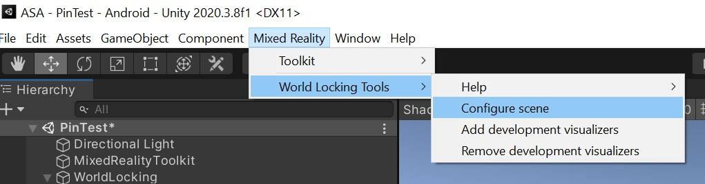

Just world-lock everything
Achieving baseline world-locked behavior for your application requires no code and very little setup. Before getting to the setup, which is described below, let's look at that baseline behavior in more detail.
Basic locking of the global Unity coordinate system to the physical world
Integrating WLT into your application provides a number of features straight out of the box, with no additional code or interaction with your app.
Simply put, with WLT, a point in Unity's global coordinate system will maintain its position relative to physical world features.
That means that if you place a hologram in your global space, it will stay where it is in the physical world. No application use of anchors is needed.
Furthermore, if WLT's persistence feature is enabled, then that same point in Unity's global coordinate space will have the same relationship to physical features in subsequent runs of the application.
Do you want to save where a hologram is in the physical world and have it appear there the next time you run your application? Just save its global pose, and restore it next run.
In addition to the simplicity provided, there are a number of advantages to using WLT rather than anchors for world-locking your scene.
How to set it up
Automated setup
For the most automated setup experience, install the latest WLT Core from the MR Feature Tool, then run the WLT Configure scene utility from the Mixed Reality Toolkit Utilities menu.

The Configure scene utility can be rerun at any time. For example, it should be rerun if the AR target has been changed from Legacy to XR SDK. If the scene is already properly configured, running the utility has no effect.
During early development, adding the visualizers can be helpful to ensure WLT is setup and working properly. They can be removed for production performance, or if for any reason are no longer needed, using the Remove visualizers utility. More details on the visualizers can be found in the Tools documentation.
Manual setup
Setup for gaining the advantages of baseline WLT behavior is very simple, and can be broken into four (4) steps. The first two steps can be skipped if installing from the MR Feature Tool.
- Import the Frozen World Engine NuGet package into your project.
- Import the World Locking Tools unity package into your project.
- Drop the WorldLockingManager prefab into your scene.
- Add an "adjustment" game object to your camera hierarchy.
A walk-through of this basic setup con be found in the World Locking Tools Samples, a sibling repository devoted to more specialized examples of WLT use.